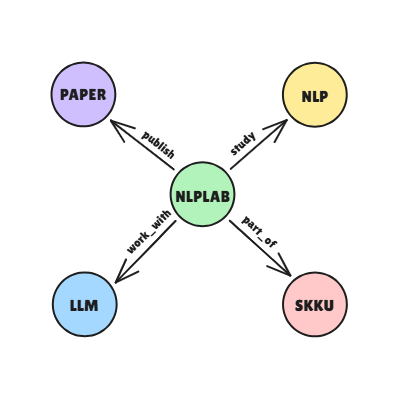
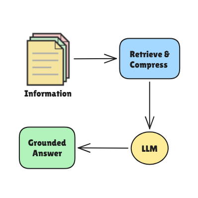
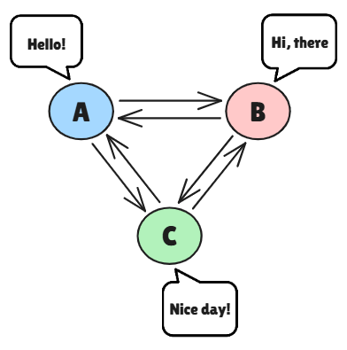
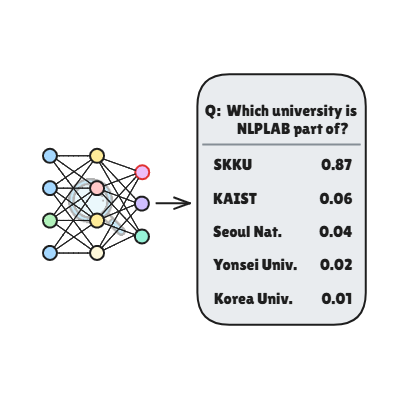
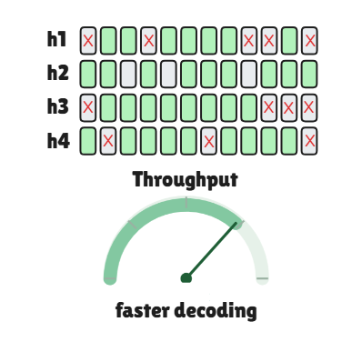
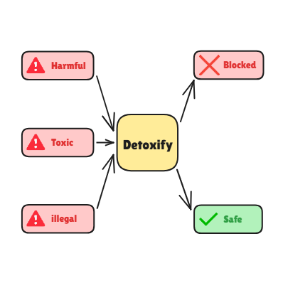

Machine Learning for NLP
자연어 처리 모델의 성능 향상을 위해 기계학습 및 딥러닝 기반 학습 알고리즘을 설계·최적화하는 연구 분야입니다. Reinforcement Learning과 Knowledge Distillation를 중심으로 언어 모델의 추론 능력, 응답 품질, 지식 활용 능력 및 일반화 성능을 고도화하는 방법을 탐구합니다.

Knowledge Graph for NLP
텍스트에 내재된 개체, 관계, 사건, 속성 등의 지식을 구조화하고, 이를 자연어 처리 모델의 추론 및 정보 활용 과정에 통합하는 연구 분야입니다. KG Construction, KG Retrieval, Text-to-GQL, KG QA 등을 통해 언어 모델의 사실성, 설명 가능성, 신뢰성을 향상시키는 데 초점을 둡니다.

Retrieval Augmented Generation
외부 문서나 데이터베이스에서 질의와 관련된 정보를 검색하고, 이를 기반으로 근거 있는 응답을 생성하는 기술입니다. 이 분야에서는 검색과 생성의 결합 구조를 최적화하여 최신 정보와 도메인 특화 지식을 효과적으로 활용하며, RAG 및 Multi-Document Compression을 중심으로 정확성과 신뢰성을 높이는 방법을 연구합니다.

Dialogue System
사용자의 발화를 이해하고 대화 맥락을 추적하여 상황에 적합한 응답을 생성하는 인간–컴퓨터 상호작용 기반 자연어 처리 기술입니다. 최근에는 Personalized Dialogue, Long-Term Dialogue, Multi-Party Dialogue 와 같은 복합적 대화 환경을 반영하여 보다 자연스럽고 지속적인 상호작용이 가능한 대화 모델을 개발하는 방향으로 연구가 확장되고 있습니다.

LLM Interpretability & Analysis
대규모 언어 모델의 출력 생성 과정, 예측 신뢰도, 오류 양상을 분석하여 모델의 의사결정 구조와 한계를 이해하는 연구 분야입니다. LLM Calibration과 Uncertainty Qualification를 통해 모델의 확신도와 실제 정답 가능성 간의 정합성을 높이고, 높은 신뢰성이 요구되는 환경에서 안전하게 활용할 수 있는 기반을 마련합니다.

LLM Efficiency
대규모 언어 모델의 성능을 유지하면서 학습 및 추론 과정에서 요구되는 연산 자원, 메모리 사용량, 지연 시간을 줄이는 연구 분야입니다. PEFT, Efficient Inference, KV Eviction 등의 기법을 통해 제한된 자원 환경에서도 LLM을 안정적이고 비용 효율적으로 활용할 수 있는 방법을 탐구합니다.

Ethics
자연어 처리 모델과 대규모 언어 모델이 사회적으로 안전하고 공정하며 책임 있게 활용될 수 있도록 하는 연구 분야입니다. Model Alignment와 Bias & Unfairness Mitigation를 중심으로 인간의 가치, 안전 기준, 사회적 맥락을 반영한 신뢰 가능한 인공지능 시스템 구축을 목표로 합니다.